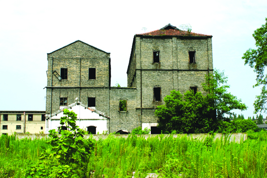

嘉兴市文物保护网 · 市级文物保护单位 · 2014-06-19 · 原文

嘉兴绢纺厂老厂区位于嘉兴市南湖区南湖街道南湖社区南湖东畔，东界纺工路，西连南湖路，南临嘉兴南湖中学，北靠浙江省武警总队医院。始建于民国10年（1921），前身为纬成股份有限公司嘉兴裕嘉分厂，现已改制，更名为浙江金鹰绢麻纺织印染有限公司。全厂总占地面积310亩，总建筑面积14018平方米（截止1988年底）。全厂设八个生产车间（精练、制绵、粗纺、精纺、织绸、抽丝、漂练、化纺、机动），本次建议保护的为精练、精纺、漂练、粗纺，制绵车间，技术科、转干品仓库、幼儿园和大办公室，总占地面积约4600平方米。其中，五个车间为砖混结构，技术科、转干品仓库、幼儿园和大办公室为砖木结构，外墙砌青砖。嘉兴绢纺厂旧址是嘉兴目前保存年代最早规模最大的近现代工业建筑群，亦是建国后嘉兴最老的五大国营企业之一，经历了民族资本、日伪经营、官僚资本和中华人民共和国成立后迂回曲折、艰苦创业的历程，对于研究中国民族工业的发展，尤其是丝绸工业的发展，有着很高的历史和科学价值。2009年公布为嘉兴市级文物保护单位。